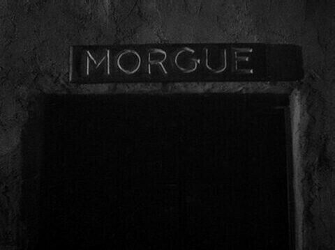

Chapter 3 - The Morgue

See Character Details
Giovanni and Sons morgue stood in front of you with ominous doors wide open. Swallowing your nerves you begin to stride towards the open doors to head inside despite the low light level. Hopefully here you will find answers.
As you head inside the place is freezing and empty. You follow the dark hallway lit by only one flourescent light in the ceiling and can't help but think about the times you've been to morgues before...
Morgues are an unfortunately common place of visitation for someone in your line of work. Cases often start with dead bodies being examined in places like this. You've never quite adapted to the atmosphere though...
Morgues sometimes need to be visited. If a bounty was killed before you could collect it and was a legal bounty then they need offically logged into the system and you often had to tag along for that due to your position. The places still creep you out though...
As you cross the hallway you start to hear... whispers. You look about but can't see anything... but you can definetly hear faint whispers. Frowning in confusion and wondering if you are going insane you try to focus. As you do so something changes inside you... you feel your hunger grow and your eyes turn solid black as you can suddenly see the origin of the whispers... spirits. Ghostly humans surround you and staring. They whispered despite their dead eyed stare and their mouths not moving. However the moment one notices that you can see them it shrieks loudly and vanishes. The other group soon followed suit leaving you shaken...
"Excuse me?" The small voice comes from behind you. Whirling around you see a skeletally thin man staring at you with dead eyes. He gestured behind himself and said. "Mister Giovanni will see you now." Before turning and starting to walk. Hesitating you begin to follow him. This is your only lead on answers after all...
To the Boss